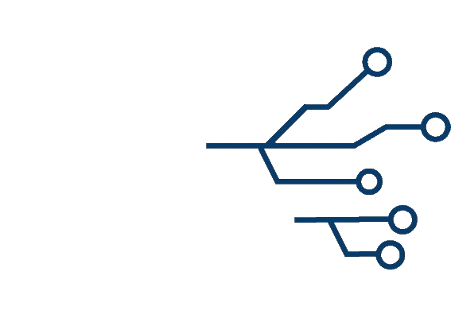
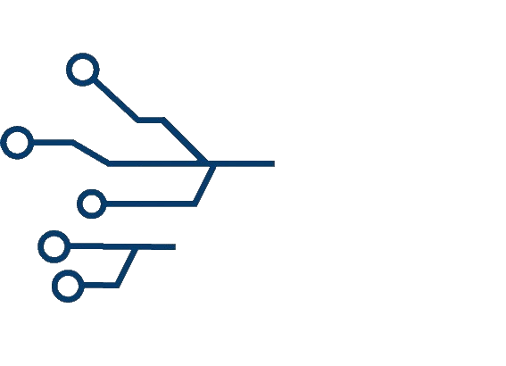

Informaticagrondleggers


Wat valt er hier te vinden?
Je hebt misschien nog niet veel van ze gehoord, maar ze zijn de
belangrijkste figuren voor de informatica: Alan Turing, Claude Shannon
en Alonzo Church.
Er is veel tot weinig over ze te vinden, dus hier, op deze website,
hebben we het belangrijkste op een rijtje gezet.
Verder vind je hier
informatie over de persoon die jouw manier van leven, in deze tijd,
sterk beïnvloedt: Michael Stonebraker, vader van relationele
databases.
Geïnteresseerd? Aarzel niet, ga op onderzoek uit!